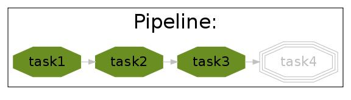
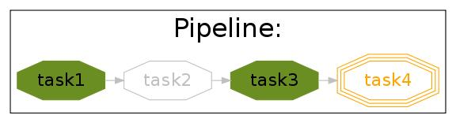
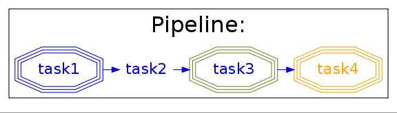

Full Tutorial¶
Overview¶
The ruffus module is a lightweight way to add support for running computational pipelines.
Computational pipelines are often conceptually quite simple, especially if we breakdown the process into simple stages, or separate tasks.
Each task is represented by a python function
@follows¶
A Simple example¶
Use the @follows(...) python decorator before the function definitions:
from ruffus import * import sys def first_task(): print "First task" @follows(first_task) def second_task(): print "Second task" @follows(second_task) def final_task(): print "Final task"
Running¶
Now we can run the pipeline by:
pipeline_run([final_task])Because final_task depends on second_task which depends on first_task , all three functions will be executed in order.
Displaying¶
We can see a flowchart of our fledgling pipeline by executing:
pipeline_printout_graph ( open("flowchart.svg", "w"), "svg", [final_task])
More to @follows¶
All this assumes that all your pipelined tasks are defined in order. (first_task before second_task before final_task)
This is usually the most sensible way to arrange your code. If you wish to refer to tasks which are not yet defined, you can do so by quoting the function name. This is also a way of referring to tasks in other modules:
@follows(first_task, "fifth_task", "another_module.useful_task") def second_task(): print "Second task"
@follows and mkdir¶
A common prerequisite for any computational task, is making sure that the destination directories exist. As a shortcut, we can define a special mkdir dependency. For example:
@follows(first_task, mkdir("output/results/here")) def second_task(): print "Second task"will make sure that output/results/here exists before second_task is run.
In other words, it will make the output/results/here directory if it does not exist.
@parallel¶
Often each task consists of multiple jobs (in GNU make terminology) which can be run concurrently.
Each job is a separate call to the same task function but with different parameters. Let us try to add up (1+2), (3+4) and (5+6) in parallel:
from ruffus import * parameters = [ ['A', 1, 2], # 1st job ['B', 3, 4], # 2nd job ['C', 5, 6], # 3rd job ] @parallel(parameters) def parallel_task(name, param1, param2): sys.stderr.write(" Parallel task %s: " % name) sys.stderr.write("%d + %d = %d\n" % (param1, param2, param1 + param2)) pipeline_run([parallel_task])Produces the following:
Task = parallel_task Parallel task A: 1 + 2 = 3 Job = ["A", 1, 2] completed Parallel task B: 3 + 4 = 7 Job = ["B", 3, 4] completed Parallel task C: 5 + 6 = 11 Job = ["C", 5, 6] completed
Multi Processing¶
Ruffus uses python multiprocessing to run each job in a separate process.
This means that jobs do not necessarily complete in the order of the defined parameters. Task hierachies are, of course, inviolate: upstream tasks run before downstream, dependent tasks.
The number of concurrent jobs can be set in pipeline_run:
pipeline_run([parallel_task], multiprocess = 5)if multiprocess is set to 1, then jobs will be run on a single process.
Exceptions¶
Python exceptions or syntax errors are gathered from all the parallel jobs before being reraised as an aggregate Exception. A full stack trace is provided so that you can see where errors occurred.
In the previous example, if the number of parameters is incorrect:
from ruffus import * @parallel([['A', 1], ['B',3]]) def parallel_task(name, param1, param2): sys.stderr.write(" Parallel task %s: " % name) sys.stderr.write("%d + %d = %d\n" % (param1, param2, param1 + param2)) pipeline_run([parallel_task])This would have produced these detailed error messages for each of the two jobs:
task.RethrownJobError: Exceptions running jobs for 'def parallel_task(...):' Original exceptions: Exception #1 exceptions.TypeError: parallel_task() takes exactly 3 arguments (2 given) for Job = ["A", 1] Traceback (most recent call last): File "task.py", line 1022 [...] TypeError: parallel_task() takes exactly 3 arguments (2 given) Exception #2 exceptions.TypeError: parallel_task() takes exactly 3 arguments (2 given) for Job = ["B", 3] Traceback (most recent call last): File "task.py", line 1022 [...] TypeError: parallel_task() takes exactly 3 arguments (2 given)(Parts of the traceback have been removed for brevity)
Interrupting the pipeline¶
If your task function returns false, this will halt the pipeline at that point.:
from ruffus import * @parallel([['A', 1], ['B',3]]) def parallel_task(name, param1): if name == 'A': return False pipeline_run([parallel_task])produces the following (abbreviated):
task.RethrownJobError: Exceptions running jobs for 'def parallel_task(...):' Original exception: Exception #1 task.JobSignalledBreak: Job = ["A", 1] returned False for Job = ["A", 1]
Multiple Errors¶
For any task where exceptions are thrown, Ruffus will continue executing until the number of exceptions is equal to the number of concurrent jobs (multiprocess) set in pipeline_run. This seems a fair tradeoff between being able to gather detailed error information for running jobs, and not wasting too much time for a task that is going to fail anyway.
Ruffus always exits concurrent task operations as soon as possible if the pipeline is interrupted by a job returning false (see previous section).
Generating parameters on the fly¶
The above examples assume you know the parameters each job takes beforehand. Sometimes, it is necessary, or perhaps more convenient, to generate parameters on the fly or at runtime.
All this requires is a function which generate one list (or any sequence) of parameters per job. For example:
from ruffus import * def generate_parameters_on_the_fly(): """ returns one list of parameters per job """ parameters = [ ['A', 1, 2], # 1st job ['B', 3, 4], # 2nd job ['C', 5, 6], # 3rd job ] for job_parameters in parameters: yield job_parameters @parallel(generate_parameters_on_the_fly) def parallel_task(name, param1, param2): sys.stderr.write(" Parallel task %s: " % name) sys.stderr.write("%d + %d = %d\n" % (param1, param2, param1 + param2)) pipeline_run([parallel_task])Similarly produces:
Task = parallel_task Parallel task A: 1 + 2 = 3 Job = ["A", 1, 2] completed Parallel task B: 3 + 4 = 7 Job = ["B", 3, 4] completed Parallel task C: 5 + 6 = 11 Job = ["C", 5, 6] completedThe parameters often need to be generated more than once (see below).
@files¶
Skip jobs which are up to date¶
Usually it will not be necessary to run all the tasks in a pipeline but only where the input data has changed or the task is no longer up to date.
One easy way to do this is to check the modification times for the input and output files of a job. The job will only be rerun if the input file has changed since the output file was produced.
Ruffus treats the first two parameters of each job as the input and output files and checks timestamps for you.
From the command prompt, make our starting files:
> echo "start 1" > a.1 > echo "start 2" > a.2Then run the following python code:
from ruffus import * parameters = [ [ 'a.1', 'a.2', 'A file'], # 1st job [ 'b.1', 'b.2', 'B file'], # 2nd job ] @files(parameters) def parallel_io_task(infile, outfile, text): infile_text = open(infile).read() f = open(outfile, "w").write(infile_text + "\n" + text) pipeline_run([parallel_io_task])Gives:
Task = parallel_io_task Job = ["a.1" -> "a.2", "A file"] completed Job = ["b.1" -> "b.2", "B file"] completedIf you ran the same code a second time, nothing would happen because a.2 is more recent than a.1 and b.2 is more recent than b.1 .
However, if you subsequently modified a.1 again:
> echo touch a.1You would see the following:
>>> pipeline_run([parallel_io_task]) Task = parallel_io_task Job = ["a.1" -> "a.2", "A file"] completed Job = ["b.1" -> "b.2", "B file"] unnecessary: already up to dateThe 2nd job is up to date and will be skipped.
Caveats: Timestamp resolution¶
Note that modification times have one second precision under certain versions of Linux and Windows, especially over the network. This may result in some jobs running even when they are up-to-date because the modification times appear to be identical.
Input/Output @files¶
- The input and output files for each job can be
- A single file name
- A list of files
- None
If the input file is None, the job will run if any output file is missing.
If the output file is None, the job will always run.
If any of the output files is missing, the job will run.
If any of the input files is missing when the job is run, a MissingInputFileError exception will be raised, For example,
task.MissingInputFileError: No way to run job: Input file ['a.1'] does not exist for Job = ["a.1" -> "a.2", "A file"]
Short cut for single jobs¶
If you are specifying the parameters for only one job, you can leave off the brackets, greatly improving clarity:
from ruffus import * @files('a.1', ['a.2', 'b.2'], 'A file') def single_job_io_task(infile, outfile, text): infile_text = open(infile).read() f = open(outfile, "w").write(infile_text + "\n" + text) pipeline_run([parallel_io_task])Produces:
Task = single_job_io_task Job = ["a.1" -> ["a.2", "b.2"], "A file"] completed
Automatic dependency checking¶
Running all out-of-date tasks and dependents¶
By default, ruffus will
- build a flow chart,
- look upstream (among the antecedents) of the specified target(s),
- find all the most upstream out-of-date tasks,
- start running from there.
This means that ruffus may ask any task if their jobs are out of date more than once:
- once when deciding whether/how to run the pipeline
- once when actually executing the task.
Ruffus tries to be clever / efficient, and does the minimal amount of querying.
A simple example¶
Four successive tasks to run:¶
The pipeline in example_scripts/simpler.py has four successive tasks:
python simpler.py -F "jpg" -d ../images/four_stage_pipeline.jpg -t task4 -K -Hproducing the following flowchart

Flow Chart Key:

We can see that all four tasks need to run reach the target task4.
Pipeline tasks are up-to-date:¶
After the pipeline runs (python simpler.py -d ""), all tasks are up to date and the flowchart shows:
python simpler.py -F "jpg" -d ../images/complete.jpg -t task4 -K -H
Some tasks out of date:¶
If we then made task2 and task4 out of date by modifying their input files:
> touch a.1 > touch a.3the flowchart would show:
python simpler.py -F "jpg" -d ../images/maximal_mode.jpg -t task4 -K -H
Showing that:
- the pipeline only has to rerun from task2.
- task1 is not out of date
- task3 will have to be re-run because it follows (depends on) task2.
Minimal Reruns¶
In fact, you could point out that task3 is not out of date. And if we were only interested in the immediate dependencies of task4, we might not need task2 to rerun at all, only task4.
In which case, we can rerun the pipeline with a different option:
pipeline_run([task4], gnu_make_maximal_rebuild_mode = False)and only task4 will rerun.
This rather dangerous option is useful if you don’t want to keep all the intermediate files/results from upstream tasks. The pipeline code will iterate up the flowchart and stop at the first up to date task.
Forced Reruns¶
In any case, you can always force the pipeline to run from one or more tasks, whether they are up to date or not. This is particularly useful, for example, if the pipeline code changes (rather than the data).
pipeline_run([task4], [task1])will run all tasks from task1 to task4
Both the “target” and the “forced” lists can include as many tasks as you wish. All dependencies are still carried out and out-of-date jobs rerun.
@files_re¶
i/o files using regular expressions¶
It is often not possible to come up with a predetermined list of input and output files for a each job in a pipeline task. Instead, you would like to apply an operation to whatever files that are present of the right type, however many there are.
Typically, in traditional make files, you would manage this via file extensions. For example, compiling all “.c” source files into object files with “.obj” extension. Because python has such good regular expression support, it is easy to have more sophisticated schemes to organise your files, such as putting them into different directories, giving them different names.
A simple example¶
from ruffus import * # # convert all files ending in ".1" into files ending in ".2" # @files_re('*.1', '(.*).1', r'\1.2') def task_re(infile, outfile): open(outfile, "w").write(open(infile).read() + "\nconverted\n") pipeline_run([task_re])This pipeline task:
- takes each file which has the .1 suffix,
- adds the line converted to its contents, and
- outputs a corresponding file with a .2 suffix.
If you ran this, you may be surprised to see that nothing happens. This is because there are no *.1 files to begin with.
but if you first created a.1 and b.1
>>> open("a.1", "w") <open file 'a.1', mode 'w' at 0x96643e0> >>> open("b.1", "w") <open file 'b.1', mode 'w' at 0x9664e80> >>> pipeline_run([task_re])You would see the creation of two new files:
Task = task_re Job = ["a.1" -> "a.2"] completed Job = ["b.1" -> "b.2"] completed
@files_re in more detail¶
Let us look at the @files_re directive again to see what it does:
@files_re( '*.1', # 'glob' * .1 '(.*).1', # Regular expression match r'\1.2' # add the ".2" extension )
- There are three parameters:
The first is a “glob” pattern, such as you might type in a command prompt to find a list of files (ls * or dir *.*)
(See python glob documentation.)
For each file name returned by the “glob”, we make sure it has a .1 extension, and save the “root” of each file name.
(See python regular expression (re) documentation.)
.2 is appended to the matching file name root to give a new output file.
(See the documentation for re.sub.)
More ambitious @files_re¶
Because @files_re uses regular expressions, you organise your files for each job with greater power and flexibility. Let us try putting files in different subdirectories.
First create some files for different animals:
> touch mammals.tiger.wild.animals > touch mammals.lion.wild.animals > touch mammals.lion.handreared.animals > touch mammals.dog.tame.animals > touch mammals.dog.wild.animals > touch reptiles.crocodile.wild.animalsWe are only interested in mammals, and we would like the files of each species to end up in its own directory after we have processed it.
Let us also prepare the directories. (We could also use @follows(mk_dir(xxx)) to do this but let us keep this example simple.):
> mkdir -p tiger lion dogThen, the following:
from ruffus import * @files_re('*.animals', r'mammals\.(.+)\.(.+)\.animals', # save species and 'wild'/'tame' r'\1/\1.\2.in_my_zoo') def capture_mammals(infile, outfile): open(outfile, "w").write(open(infile).read() + "\ncaptured\n") pipeline_run([capture_mammals])Will put each captured mammal in its own directory:
Task = capture_mammals Job = ["mammals.dog.tame.animals" -> "dog/dog.tame.in_my_zoo"] completed Job = ["mammals.dog.wild.animals" -> "dog/dog.wild.in_my_zoo"] completed Job = ["mammals.lion.handreared.animals" -> "lion/lion.handreared.in_my_zoo"] completed Job = ["mammals.lion.wild.animals" -> "lion/lion.wild.in_my_zoo"] completed Job = ["mammals.tiger.wild.animals" -> "tiger/tiger.wild.in_my_zoo"] completedNote that we have ignored the crocodile file because it doesn’t match the mammal part of the regular expression.
Multiple parameters with @files_re¶
So far, even with the complicated example above, we are only generating one input file name, and one output file name per job. Sometimes this is not sufficient. By analogy with @files, we can use regular expressions to create any number of parameters for each job, so long as
- The first parameter are input file(s)
- The second parameter are output file(s)
Regular expression substitution is carried out on all strings, or on list of strings
None and all other types of objects are passed through unchanged.
Let us see how this works in practice. Building on the previous example:
> touch mammals.tiger.wild.animals > touch mammals.lion.wild.animals mammals.lion.handreared.animals > touch mammals.dog.tame.animals mammals.dog.wild.animals > touch reptiles.crocodile.wild.animals > mkdir -p tiger lion dogThen, the following:
from ruffus import * @files_re('*.animals', r'mammals\.(.+)\.(.+)\.animals', # save species and 'wild'/'tame' r'\g<0>', # input: entire match unchanged [r'\1/\1.\2.in_my_zoo', # output file names r'all_species/\1.\2.in_my_zoo'], r'\1' ) # species name def capture_mammals(infile, outfiles, species): for f in outfiles: open(f, "w").write(open(infile).read() + "\nCaptured %s\n" % species) pipeline_run([capture_mammals])Will put each captured mammal in the all_species directory as well as its own:
Task = capture_mammals Job = ["mammals.dog.tame.animals" -> ["dog/dog.tame.in_my_zoo", "all_species/dog.tame.in_my_zoo"], "dog"] completed Job = ["mammals.dog.wild.animals" -> ["dog/dog.wild.in_my_zoo", "all_species/dog.wild.in_my_zoo"], "dog"] completed Job = ["mammals.lion.handreared.animals" -> ["lion/lion.handreared.in_my_zoo", "all_species/lion.handreared.in_my_zoo"], "lion"] completed Job = ["mammals.lion.wild.animals" -> ["lion/lion.wild.in_my_zoo", "all_species/lion.wild.in_my_zoo"], "lion"] completed Job = ["mammals.tiger.wild.animals" -> ["tiger/tiger.wild.in_my_zoo", "all_species/tiger.wild.in_my_zoo"], "tiger"] completedNote the third species parameter for capture_mammals(...).
@check_if_uptodate¶
Manual dependency checking¶
tasks specified with @files or @files_re have automatic dependency checking based on file modification times.
Sometimes, you might want to decide have more control over whether to run jobs, especially if a task does not rely on or produce files (i.e. with @parallel)
You can write your own custom function to decide whether to run a job. This takes as many parameters as your task function, and needs to return True if an update is needed.
This simple example which create a.1 if it does not exist:
from ruffus import * @files(None, "a.1") def create_if_necessary(input_file, output_file): open(output_file, "w") pipeline_run([create_if_necessary])Could be rewritten as:
from ruffus import * import os def check_file_exists(input_file, output_file): return not os.path.exists(output_file) @parallel([[None, "a.1"]]) @check_if_uptodate(check_file_exists) def create_if_necessary(input_file, output_file): open(output_file, "w") pipeline_run([create_if_necessary])Both produce the same output:
Task = create_if_necessary Job = [null, "a.1"] completed
Note
The function specified by @check_if_uptodate can be called more than once for each job.
See the discussion of how ruffus decides which tasks to run in @automatic dependency checking
@posttask¶
Signalling the completion of each task¶
It is often useful to signal the completion of each task by specifying one or more function(s) using @posttask
from ruffus import * def task_finished(): print "hooray" @posttask(task_finished) @files(None, "a.1") def create_if_necessary(input_file, output_file): open(output_file, "w") pipeline_run([create_if_necessary])
Note
The function(s) provided to @posttask will be called if the pipeline passes through a task, even if none of its jobs are run because they are up-to-date. This happens when a upstream task is out-of-date, and the execution passes through this point in the pipeline
touch_file¶
One common way to note the completion of a task is to create some sort of “flag” file. Each stage in a traditional make pipeline would contain a touch completed.flag.
This is such a common use that there is a special shortcut for posttask:
from ruffus import * @posttask(touch_file("task_completed.flag")) @files(None, "a.1") def create_if_necessary(input_file, output_file): open(output_file, "w") pipeline_run([create_if_necessary])
Logging¶
Logging task/job completion¶
Ruffus logs each task and each job as it is completed. The results of each of the examples in this tutorial were produced by default logging to stderr.
You can specify your own logging by providing a log object to pipeline_run. This log object should have debug() and info() methods.
Instead of writing your own, it is usually more convenient to use the python logging module which provides logging classes with rich functionality:
import logging import logging.handlers LOG_FILENAME = '/tmp/ruffus.log' # Set up a specific logger with our desired output level my_ruffus_logger = logging.getLogger('My_Ruffus_logger') my_ruffus_logger.setLevel(logging.DEBUG) # Add the log message handler to the logger handler = logging.handlers.RotatingFileHandler( LOG_FILENAME, maxBytes=2000, backupCount=5) my_ruffus_logger.addHandler(handler) from ruffus import * @files(None, "a.1") def create_if_necessary(input_file, output_file): """Description: Create the file if it does not exists""" open(output_file, "w") pipeline_run([create_if_necessary], [create_if_necessary], logger=my_ruffus_logger) print open("/tmp/ruffus.log").read()The contents of /tmp/ruffus.log are, as expected:
Task = create_if_necessary Description: Create the file if it does not exists Job = [null -> "a.1"] completed
Your own logging within each job¶
It is often useful to log the progress within each job.
However, each job runs in a separate process, and it is not a good idea to pass the logging object itself between jobs:
- logging is not synchronised between processes
- logging objects can not be pickled and sent across processes
The best thing to do is to have a centralised log and to have each job invoke the logging methods (e.g. debug, warning, info etc.) across the process boundaries in the centralised log.
This example shows how this can be coded.
The proxy_logger module also provides an easy way to share logging objects among jobs. This requires just two simple steps:
1. Set up log from config file¶
from ruffus.proxy_logger import * (logger_proxy, logging_mutex) = make_shared_logger_and_proxy (setup_std_shared_logger, "my_logger", {"file_name" :"/my/lg.log"})
2. Give each job proxy to logger¶
Now, pass:
- logger_proxy (which forwards logging calls across jobs) and
- logging_mutex (which prevents different jobs which are logging simultaneously from being jumbled up)
to each job:
@files(None, 'a.1', logger_proxy, logging_mutex) def task1(ignore_infile, outfile, logger_proxy, logging_mutex): """ Log within task """ open(outfile, "w").write("Here we go") with logging_mutex: logger.proxy.info("Here we go logging")